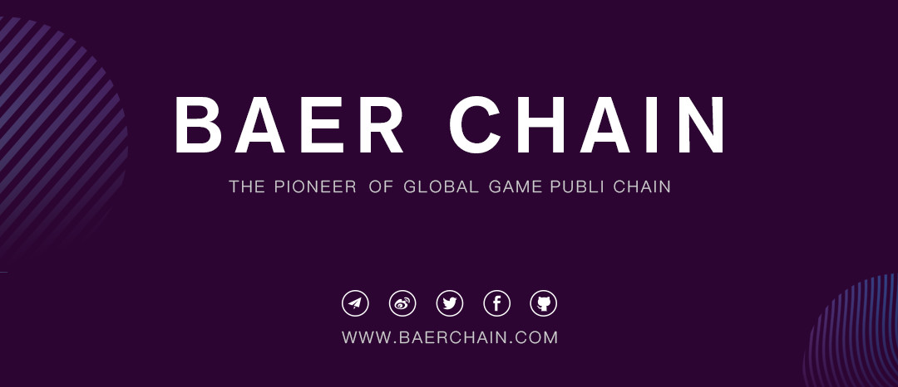

1
After the launch of the mainnet beta version, Baer Chain’s Curvature Navigation Developers Conferences will continue to be held in Europe, where is the center of the global blockchain industry.
From June 19th to 20th, BLOCKCHAIN EXPO 2019, the world's most influential blockchain fair, will be held in Amsterdam, the Netherlands. Baer Chain was invited to attend the event and will participate in the exhibition. Baer Chain’s Curvature Navigation Developers Conference will also be held in the expo.

Since the start of the first stop of Curvature Navigation Developers Conferences tour in May, Baer Chain has attracted attentions from all over the world.
The conferences tour aims to provide in-depth insights and discussions on topics such as blockchain development trends and blockchain game development by bringing together the top game developer teams, investors and influential media in the blockchain industry.
2
As the world's largest blockchain event, BLOCKCHAIN EXPO 2019 provides a platform for blockchain companies, developers and industry elites to communicate with each other share knowledge about blockchain, which is a new breakthrough technology that is rapidly becoming a mainstream. All participants will also discuss about how the blockchain technology brings transformations to industries such as financial services, manufacturing, healthcare, energy, and entertainment.
BLOCKCHAIN EXPO 2019 has attracted blockchain practitioners and elites from all over the world. It is reported that this exhibition will bring together more than 350 blockchain projects with the most development value in the world. In addition, the conference will hold 4 large-scale business theme events, and has invited more than 500 experts from various industries to conduct the theme. The number of participants will approximately reach 10,000.

Baer Chain will hold a two-day project exhibition on BLOCKCHAIN EXPO 2019 to show the world the development of Baer Chain from its inception and the advantages of blockchain game development based on Baer Chain technology.
In addition, Baer Chain will hold a developers conference on June 20th at the RAI Exhibition Center in Amsterdam.
At that time, Baer Chain CEO, Vincent, will deliver a presentation on the project and its technology development, and invite experts from the Dutch encryption industry entrepreneur Ruud Feltkamp and well-known commercial media people Richard Kastelein to conduct roundtables and talk about the global blockchain. Technological innovation and breakthroughs in the industry.
3
In the early days of the blockchain industry, the world's major head game companies began to actively deploy the field. Unfortunately, the performance of the public chain in the industry at the time could not meet the demand for the development of the game. The mainnet of congestion and unreasonable configuration cost seriously and hindered the game developer's vision of moving its outstanding works to the blockchain.

However, in 2018, when the whole industry entered the cold winter, Baer Chain, as the pioneer of the global game public chain, always adhered to the dual-spin drive core of technological development and ecological construction as its own value development, taking the lead in realizing the value leap of application landing. The "blockchain + game" vertical track is a true value leader.
At present, dozens of top game development teams in the world are actively developing blockchain games based on Baer Chain technology architecture. After successful game development, they will land on the Baer Chain ecosystem.

Baer Chain has launched a beta version of its mainnet, and as the official launch of the mainnet is approaching, Baer Chain's “curvature navigation†will continue to explore and lead the industry to a new era.

